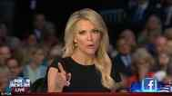
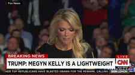
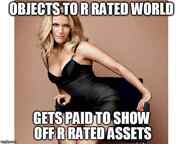

< < < Back
Fake Conservative Megyn Kelly Exposes Her Anti-Trump Agenda During Presidential Debate – Return Of Kings
It’s no surprise to anyone with a critical perspective that Fox news has moved further and further left (thanks to the rising influence of Rupert Murdoch’s progressive seed James) but what has become surprising is the ease and speed in which it’s taking place. From Glenn Beck’s ouster to Bill O’ Reilly’s increasingly progressive pandering nature, it’s clear that Fox should no longer be considered a bastion of conservative philosophy, if indeed it ever was.
This brings me to the recent republican presidential debate, where Fox news closet feminist Megyn Kelly took aim at Donald Trump with “gotcha” style questions that would have been more commonly associated originating on MSNBC.
Here’s how she addressed her remarks to Trump, with a superficial setup no less disingenuous than the “you’re a great guy” breakup speech a man might typically get; which Meg then uses as her launching pad to attack:
Trump’s response is classic, in that he emphasizes how political correctness has become too much of a problem in the US as only he can. He also gave a slight warning to Kelly when he called her on her “war on women” bullshit, which any man watching on the manosphere would have applauded.
One can perceive from Megyn’s sternness and body language that she’s taking the past verbiage by Trump personally. Her response is seething with anger, dripping with feminist condescension (cue an eye roll at the 32 second mark) and loaded with potshots that would knock most men for a loop in a live televised debate.
The fact that Trump didn’t miss a beat is a testament to his chutzpah and his defiance of political correctness. Say what you will about the Donald, but one thing you can’t say about him is that he lacks the backbone to defend his remarks. He truly embodies the confidence the alpha masculine man is supposed to represent at least in regards to an opposition to PC.

Don’t tell me to make you a sandwich, that’s what a husband is for!
To be fair, Donald was wrong to state that his remarks were only against Rosie O’Donnell. Regardless, Megyn’s questions were better suited to the context of a one-on-one interview, where these types of “hard hitting” questions would be appropriate. For her to do so on a live debate where a candidate is only given a certain amount of time to respond is sheer bias on her part, possibly with the blessing of her superiors.
The Many Faces Of Megyn Kelly
A lot of people on the right make the assumption Kelly is conservative, when in reality she is far from it. Here’s just a few examples of her CINO (conservative in name only) feminist tendencies, courtesy of Megyn herself.
Despite being a self-described Catholic she nonetheless defies biblical gender roles, most notably in her “what makes me submissive and you dominant?” remark here:
How about this homosexual agenda supporting remark?
This country has a long history of discrimination against certain groups. Eventually we wind up getting it right. Right? Against women, against blacks, the civil rights movement and so on. And in justifying that discrimination when it was in place, some folks turn to the Bible and turn to their religious beliefs and said we have to have slavery because it’s in the Bible. Women have to be second-class citizens because that’s in the Bible. Blacks and whites can’t get married because that’s in the Bible. That wound up in a case. A judge wrote that in an opinion, which the Supreme Court ultimately struck that down, saying that’s not right, judge-the Equal Protection clause says you can’t do that. Why is gay marriage any different?
While i can’t provide video on the previous quote because it’s been scrubbed from the net (interestingly enough), I can provide referenced video of Kelly’s not so subtle support for the homosexual agenda here, where she makes the farcical comparison between interracial marriage and homosexual marriage and tries to excuse it with a “I’m just expressing what they’re feeling” disclaimer:
But before I get back to Richard on that, there was a time in this country in which interracial marriage was not lawful. And the Supreme Court had to step in and say, ‘That’s wrong. Under the U.S. Constitution, under the Equal Protection clause, whites can marry blacks and states are not free to tell them otherwise.’ And those that advocate on behalf of this issue, Maggie, they say this is another, sort of, iteration of that.
She can hide behind the excuse of simply voicing an opinion for those that “advocate on behalf of this issue,” but that only works when you don’t voice an opinion that sounds like support every single time the issue comes up. Nice try Meg.

I can see the blood coming out of her…wherever!
For another example: Megyn displays her profound ignorance of our system of law when she arrogantly declares:
“like it or not the SCOTUS has the final say.”
With regard to the recent SCOTUS ruling on homosexual marriage, someone should ask Megyn if she still believes Dredd Scott is law.
https://youtu.be/NDWfS3Z86kw
Now let’s take a moment to explore Kelly’s personal past. What drew her to the attention of FOX as someone with a marketable appeal? Was it her legal career? Nope.
Her time as an ABC reporter? No.
It was the fact that she has a great pair of assets which Brit Hume became aware of in 2004.
My milkshake brings all the Brit Humes to the yard…
We got more of an understanding of the feminism that Meg secretly supports (and the looks that cover them) in a Dec 2010 GQ spread in which she stated:
“Hmm. I respect women like Gloria Steinem who paved the way. But when you say “feminist” now, there is a message that if you are too sexy and you acknowledge that part of your personality publicly, then it’s somehow an affront to women. And I reject that.”
Notice she never actually rejects the feminist label, she simply rejects what it has come to represent. This is why I consider her a neo-feminist, because her own remarks paint her as a closet lipstick leftist who is skilled in the marketing of her assets, but can’t very well call herself a feminist at a network largely perceived to be conservative. It would be career suicide.
From earlier this year:
I hate to sound like I’m about 200 but half naked girls, I mean like seriously it’s really in your face everywhere you turn you’re trying to raise a kid in a G rated world and you can’t because the world seems to be R rated everywhere.
Contrast that remark with the R rated image of her earlier…would Gloria Steinem approve?

Couldn’t have said it better myself
Contrast this as well: Her petulant position over Trump’s remarks about women’s looks (Using the words “Hillary Clinton” as her shield) with her 2010 interview with Howard Stern, where she discussed (her) breast and (men’s) penis size while he was busy objectifying her. Does anyone else besides me detect just a whiff of hypocrisy here?
https://youtu.be/IML_UGhXz2Q
And here’s an interview she had with neo-feminist Christina Hoff Summers, where she proceeded to gush all over her. Take special note where Megyn describes her as “conservative author” while Christina later self describes as a “moderate liberal feminist.” I would recommend a nice face-palm here but it appears Megyn beat us to it.
Megyn’s numerous politically left of center remarks make her at best conservative leaning, nothing more. Take it from someone who used to watch FOX news religiously, not everything that sounds conservative over there actually is…Meg is no exception.
You’re fired! Just kidding! But seriously, next time you’re fired
At this point It’s become no surprise that online left wing rags like Salon have been coming to her defense, as they too recognize a feminist in need of support against the “big bad sexist” Donald Trump. I thought women were strong enough to handle themselves.
Given her much-deserved collective ass kicking from Trump and conservative giants like Mark Levin and Michael Savage over the presidential debate fiasco, it would seem rumors of female empowerment have been greatly exaggerated by the disinformation media, especially given Megyn’s sudden coincidental vacation.
Much the same way that the Canadian progressives have declared war on Roosh, so too have a lot of online feminists declared war against Trump using Megyn Kelly as an excuse. Typical. Look for her to divorce and marry for a third time. These “empowered” types can never hold down a marriage for long. You heard it here first. You won’t hear it on FOX, of course.
Read More: Why Do You Care About The News?